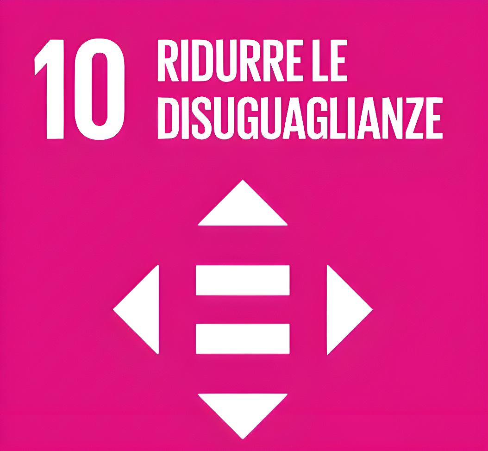
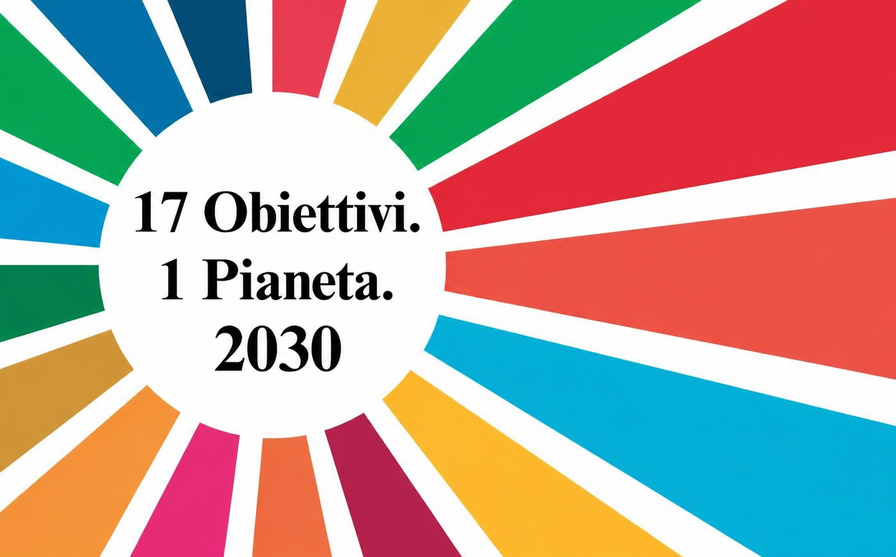
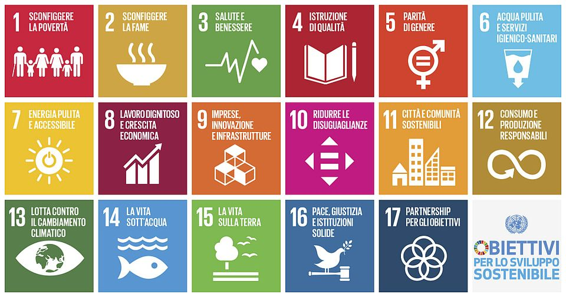

2 Obiettivi.
Grande impatto.
Andiamo ad approfondendo due dei 17 obiettivi di sviluppo sostenibile.



L'Agenda 2030 è un piano d'azione globale adottato dai 193 Paesi membri dell'ONU per guidare il mondo verso la sostenibilità entro il 2030, basandosi su 17 Obiettivi di Sviluppo Sostenibile (SDGs) e 169 traguardi specifici. Il programma punta a trasformare l'attuale modello di crescita attraverso cinque pilastri fondamentali (Persone, Pianeta, Prosperità, Pace e Partnership), affrontando in modo integrato sfide cruciali come la povertà estrema, il cambiamento climatico, le disuguaglianze sociali e l'accesso all'istruzione. Caratterizzata dal principio di "non lasciare nessuno indietro", l'Agenda è universale e richiede un impegno congiunto di governi, imprese e società civile per garantire un futuro equo e rispettoso delle risorse naturali del pianeta.

Andiamo ad approfondendo due dei 17 obiettivi di sviluppo sostenibile.
